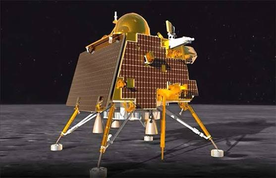
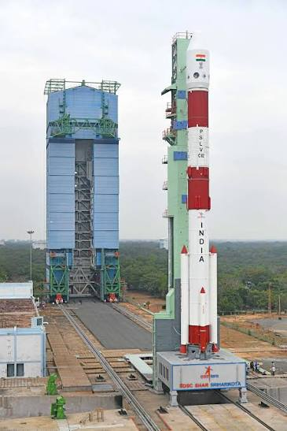
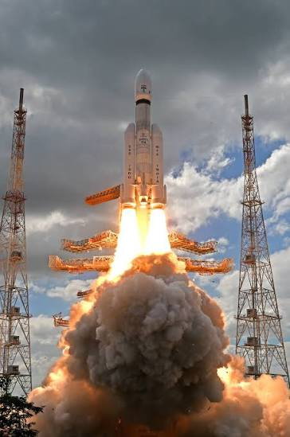
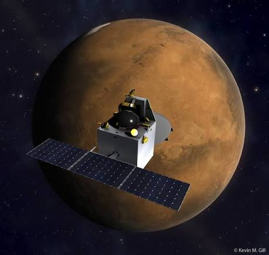
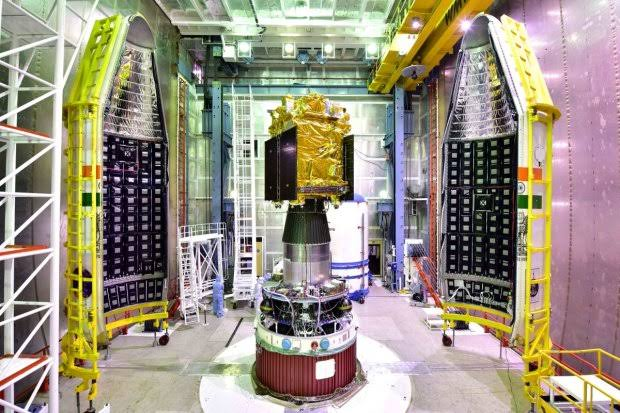

भारत अंतरिक्ष की नई उड़ान
From Ancient Wisdom to Interplanetary Exploration
Exploring the stars, powering the future.

ऋग्वेद से अंतरिक्ष तक
From the Vedas to the Stars
Long before telescopes, ancient Indian astronomers mapped the heavens. Aryabhata calculated the Earth's rotation, Brahmagupta defined zero, and the Surya Siddhanta measured planetary orbits with astonishing precision.
From this fertile culture of inquiry rose the engines of modern discovery.

एक सपने का जन्म
The Birth of ISRO
On 15 August 1969, the Indian Space Research Organisation was formed. Vikram Sarabhai envisioned space as a tool for communications, education, weather prediction, and national development.
From the first sounding rockets at Thumba to national ambition, this was the first step into orbit.

भारत की वैज्ञानिक दृष्टि
Engineering the Future
ISRO's ecosystem now spans launch vehicles, earth observation satellites, navigation systems, human spaceflight, deep-space missions, and end-to-end mission design. Every achievement rests on indigenous capability, disciplined precision, and nationwide collaboration.

पीएसएलवी — समझदार शक्ति
The Workhorse — PSLV
Four stages. Precision engineering. The Polar Satellite Launch Vehicle has carried more than 500 satellites to orbit, including 104 in a single mission — a world record.
- Height44 m
- Stages4
- Payload1,750 kg
- Success96%
लिफ्टऑफ
Lift-off

चंद्रयान-३
Chandrayaan-3 — Touching the Moon
On 23 August 2023, India became the first nation to land near the Lunar South Pole. The Vikram lander touched down; Pragyan rolled into the regolith and proved that India's engineering was ready for the lunar frontier.

मंगलयान
Mangalyaan — Mars Orbiter Mission
At a cost less than many international blockbusters, India reached Mars on its very first attempt. Mangalyaan showed that focused mission design, low-cost engineering, and scientific ambition could transform the gatekeeping of space exploration.
- Journey780M km
- Cost₹450 Cr
- Launch2013
- Orbit2014

आदित्य-L1
Aditya-L1 — Eye on the Sun
India's first solar observatory mission, placed at the Lagrange Point L1, is studying the Sun's corona, solar winds, and magnetic storms with relentless precision — giving scientists a live window into space weather.
भारत का भविष्य
The Future of India in Space
"We are not merely exploring space — we are shaping humanity's future among the stars."
जय हिन्द
A cinematic tribute to the Indian Space Research Organisation
Built with Three.js · GSAP · Lenis · WebGL